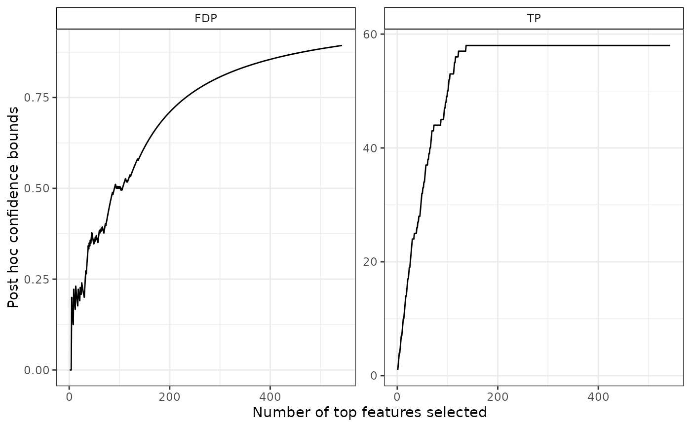
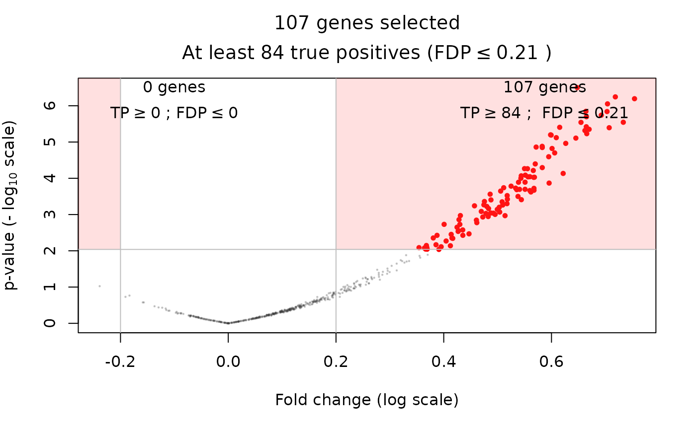
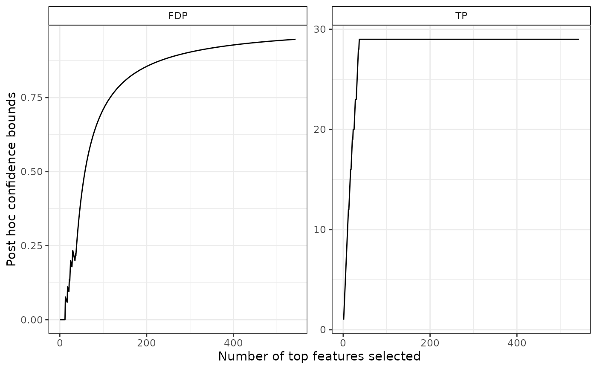
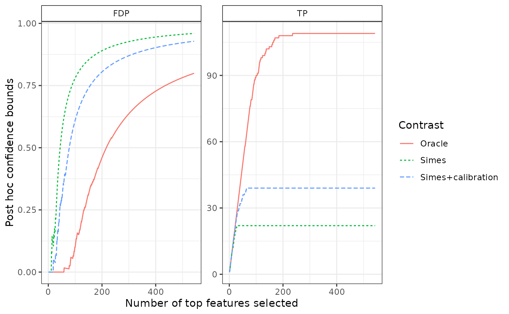

Create a 'SansSouci' object from simulation in the Gaussian equi-correlated model
Arguments
- ...
Parameters to be passed to gaussianSamples
Examples
obj <- SansSouciSim(
m = 543, rho = 0.4, n = 210,
pi0 = 0.8, SNR = 3, prob = 0.5
)
alpha <- 0.1
# Adaptive Simes (lambda-calibration)
set.seed(542)
res <- fit(obj, B = 100, alpha = alpha, family = "Simes")
plot(res)

volcanoPlot(res, q = 0.05, r = 0.2)

# upper bound on number of signals if the entire data set
# (and corresponding lower bound on FDP)
predict(res)
#> TP FDP
#> 29.000000 0.946593
# confidence curve
plot(res)

# comparison to other confidence curves
# Parametric Simes (no calibration -- assume positive dependence (PRDS))
res0 <- fit(obj, B = 0, alpha = alpha, family = "Simes")
res0
#> 'SansSouci' object:
#> Number of hypotheses: 543
#> Number of observations: 210
#> 2-sample data
#>
#> Truth:
#> 109 false null hypotheses (signals) out of 543 (pi0=0.799)
#> Parameters:
#> Test function: rowWelchTests
#> Number of permutations: B=0
#> Significance level: alpha=0.1
#> Reference family: Simes
#> (of size: K=543)
#>
#> Output:
#> Calibration parameter: lambda=0.1
# Oracle
oracle <- fit(obj, alpha = alpha, family = "Oracle")
oracle
#> 'SansSouci' object:
#> Number of hypotheses: 543
#> Number of observations: 210
#> 2-sample data
#>
#> Truth:
#> 109 false null hypotheses (signals) out of 543 (pi0=0.799)
#> Parameters:
#> Test function: rowWelchTests
#> Number of permutations: B=1000
#> Significance level: alpha=NA
#> Reference family: Oracle
#> (of size: K=543)
#>
#> Output:
#> Calibration parameter: lambda=NA
confs <- list(
Simes = predict(res0, all = TRUE),
"Simes+calibration" = predict(res, all = TRUE),
"Oracle" = predict(oracle, all = TRUE)
)
plotConfCurve(confs)

if (FALSE) { # \dontrun{
# Use wilcoxon tests instead of Welch tests
res <- fit(obj, B = 100, alpha = 0.1, rowTestFUN = rowWilcoxonTests)
volcanoPlot(res, q = 0.05, r = 0.2)
} # }